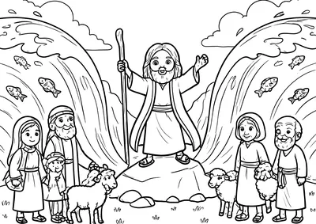
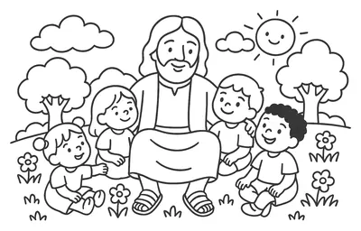
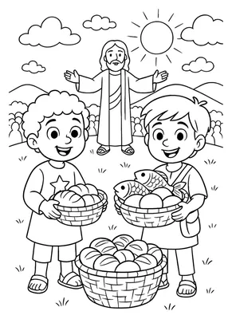
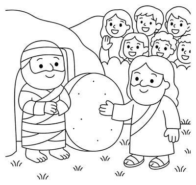

No papel
Imprima em casa ou na papelaria e pinte com lápis de cor, giz de cera ou canetinha. É a opção para a mesa da cozinha, a catequese e o fim de semana.
Catequese em casa, de 3 a 10 anos
Uma jornada para colorir pela Bíblia, em ordem: começa na Criação do Mundo e termina na Ressurreição de Jesus. Uma página por dia, e a hora da tela vira a hora de aprender sobre Deus.
Comece hoje: o acesso chega na hora, no seu e-mail.
Ele não sabe o que fazer sem a tela. Reclama, se joga no sofá, diz que está entediado. Você, cansada depois de um dia inteiro, devolve o aparelho só para ter um pouco de paz.
No dia seguinte, a mesma cena. E fica aquela culpa: a criança passa horas com vídeos, e quase nenhum minuto ouvindo falar de Deus.
E a conta chega. A Sociedade Brasileira de Pediatria alerta para estes efeitos do excesso de telas na infância:
Quanto de tela a Sociedade Brasileira de Pediatria recomenda, no máximo, por dia:
Tirar a tela não basta. É preciso colocar algo melhor no lugar.
Arraste para ver a mesma página antes e depois de pintada.
Arraste e veja a conta do seu filho.
Mais de 45 dias inteiros, 24 horas por dia, olhando para uma tela.
de conversa sobre Deus com você, trocando só 20 minutos de tela por dia por uma página para colorir.
As páginas seguem a ordem da Bíblia. A cada desenho, seu filho dá mais um passo na história da salvação e entende como tudo se encaixa, da Criação até Jesus.
Algumas das paradas da jornada. Ao final, a criança recebe o Diploma de Pequeno Discípulo.
Logo depois da compra, você recebe o acesso por e-mail. Funciona no navegador do celular, sem instalar aplicativo.
Pinte no papel, em folha A4 comum, ou direto na tela com o dedo. Quantas vezes quiser.
Uma página por dia, na ordem da Bíblia. Cada desenho segue uma história: vocês leem juntos, a criança colore e você faz a pergunta da página.
Imprima em casa ou na papelaria e pinte com lápis de cor, giz de cera ou canetinha. É a opção para a mesa da cozinha, a catequese e o fim de semana.
Abra a página na área de membros, escolha a cor e toque no desenho. Serve para a sala de espera, a viagem de carro ou o dia sem impressora. A tela vira uma história da Bíblia, não um vídeo sem fim.
Você testou a pintura no celular lá no começo desta página. É assim que funciona na área de membros.
Do Antigo ao Novo Testamento, passando pelos heróis da fé e pelos milagres de Jesus.




Jesus multiplicou 5 pães e 2 peixes para alimentar milhares de pessoas.
Converse: Deus pode fazer muito com pouco.
Você não precisa saber explicar a Bíblia. Cada página já vem com tudo pronto para ensinar a fé, mesmo que você nunca tenha dado uma aula de catequese.
Colorir é uma atividade com as mãos, com começo e fim. A criança vê o resultado na hora e quer mostrar para você. Comece com uma página curta e faça junto.
Uma página por dia é suficiente. Enquanto ela pinta, você faz a pergunta da página. Dá para fazer até enquanto prepara o jantar.
Não precisa. A criança pode pintar direto no celular, com o dedo. E, quando quiser o papel, qualquer papelaria imprime o PDF.
Sim. São histórias da Bíblia contadas de forma simples, boas para a catequese, a escola dominical e o culto infantil.
Pagamento seguro e acesso imediato por e-mail
Teste por 7 dias, sem risco. Imprima, pinte com seu filho e veja a diferença. Se não gostar, peça o reembolso e devolvemos 100% do valor, sem perguntas. O risco é todo nosso.
Assim que o pagamento é aprovado, você recebe por e-mail o acesso à área de membros. Lá estão todos os PDFs para baixar no celular ou no computador.
Na ordem da Bíblia. A primeira é a Criação do Mundo, depois vêm Noé, Abraão, José, Moisés, os juízes, os reis e os profetas, e então a vida de Jesus, até a Ressurreição. Assim a criança aprende a história da salvação do começo ao fim.
Para crianças a partir dos 3 anos, com a ajuda de um adulto. As crianças maiores conseguem ler o resumo e a pergunta sozinhas.
Sim. São histórias da Bíblia conhecidas por todos os cristãos, como a Arca de Noé, Davi e Golias e a Multiplicação dos Pães.
Não. Dá para pintar direto no celular, na área de membros. Se preferir o papel, é só imprimir o PDF em casa ou numa papelaria.
Pode. Imprima quantas vezes quiser para usar em família, e de novo quando a criança quiser pintar outra vez.
Não. O pagamento é único e o acesso é seu.
Você tem 7 dias de garantia. Peça o reembolso pelo e-mail de suporte e devolvemos todo o valor.
Devolver o celular para ter paz, mais uma vez, e deixar a conversa sobre Deus para depois.
Imprimir a primeira página, a Criação do Mundo, sentar ao lado do seu filho e começar a jornada pela Bíblia juntos.
Pagamento seguro e acesso imediato por e-mail
Seu filho vai lembrar das tardes atravessando a Bíblia com você, do Gênesis à Ressurreição. As horas de vídeo, ele esquece.